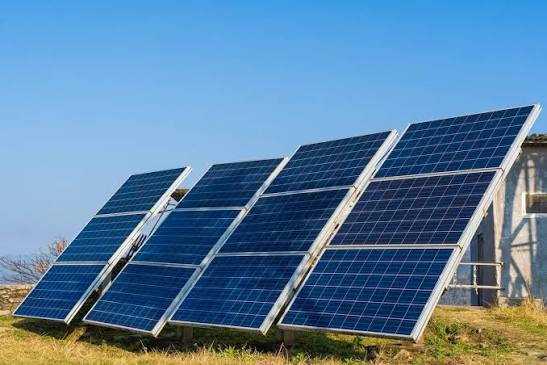
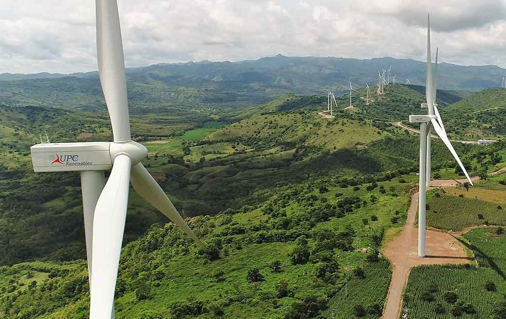
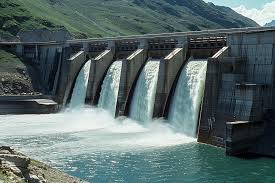
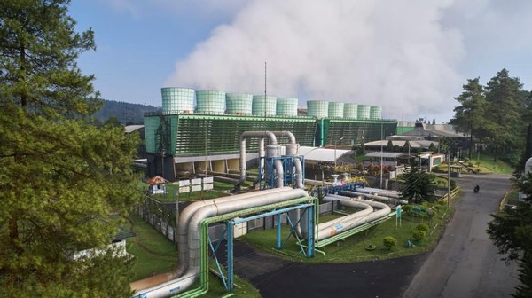
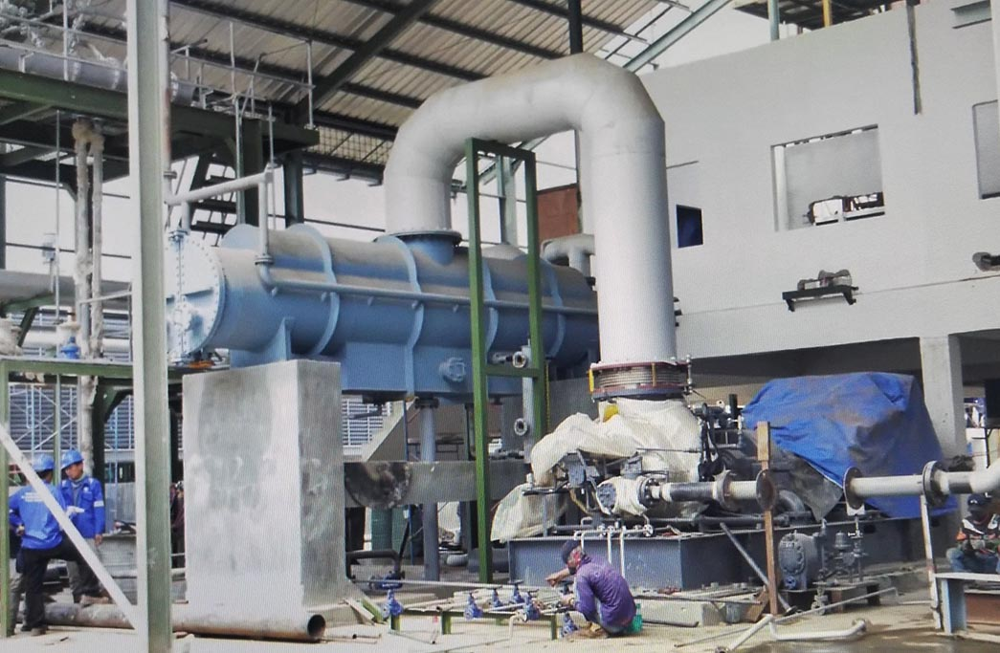

Materi Energi Terbarukan
Pembahasan Komprehensif Konsep Energi, Sumber Energi, Efisiensi, & Formulasi Daya Terapan
📘 BAB 1: Energi
1.1 Pengertian Energi
Energi adalah kemampuan untuk melakukan usaha atau menyebabkan terjadinya perubahan pada suatu benda maupun sistem. Perubahan tersebut dapat berupa benda yang bergerak, berubah bentuk, berubah suhu, menghasilkan cahaya, atau menghasilkan bunyi. Dalam fisika, energi termasuk besaran yang memiliki satuan Joule (J) menurut SI. Energi juga sering dinyatakan dalam satuan lain, seperti kalori (cal) untuk energi panas dan kilowatt-hour (kWh) untuk energi listrik yang digunakan dalam kehidupan sehari-hari. Energi tidak dapat diciptakan maupun dimusnahkan, hanya bisa diubah dari satu bentuk ke bentuk lainnya. Contohnya ketika lampu listrik dinyalakan, energi listrik yang digunakan dalam kehidupan sehari-hari.
1.2 Bentuk-Bentuk Energi
Di alam terdapat berbagai jenis bentuk energi. Namun, dalam studi pemanfaatan sumber daya alam dan teknologi pembangkit, fokus utama kita tertuju pada 5 bentuk energi berikut:
1. Energi potensial gravitasi (EP)
Energi potensial gravitasi merupakan energi yang dimiliki suatu benda karena posisinya berada pada ketinggian tertentu terhadap permukaan bumi. Semakin tinggi posisi benda, semakin besar energi potensial yang dimilikinya. Contohnya adalah air yang ditampung di bendungan. Air tersebur memiliki energi potensial yang besar karena berada di tempat yang lebih tinggi. Saat dialirkan ke bawah, EP berubah menjadi energi gerak untuk memutar turbin pada PLTA.
Persamaan Energi Potensial Gravitasi:
$$EP = m \cdot g \cdot h$$Keterangan: EP = Energi Potensial (Joule), m = Massa benda (kg), g = Percepatan gravitasi (9,81 m/s^2), h = Ketinggian benda (meter).
2. Energi kinetik (EK)
Energi kinetik adalah energi yang dimiliki oleh benda karena bergerak. Semakin besar massa benda dan semakin tinggi kecepatannya, maka semakin besar pula energi kinetiknya. Pada pembangkit listrik tenaga angin (PLTB), energi kinetik angin dimanfaatkan untuk memutar baling-baling turbin sehingga menghasilkan energi listrik.
Persamaan Energi Kinetik:
$$EK = \frac{1}{2} \cdot m \cdot v^2$$Keterangan: E = Energi Kinetik (Joule), m = Massa benda/fluida (kg), v = Kecepatan gerak (m/s).
Gambar 1.2: Ilustrasi Energi Potensial Air di Ketinggian yang Mengalir Menjadi Energi Kinetik.
3. Energi cahaya
Energi cahaya adalah energi yang dibawa oleh gelombang elektromagnetik yang dapat dilihat oleh mata amnusia. Sumber energi cahaya terbesar di bumi adalah matahari. Energi cahaya dimanfaatkan dalam berbagai bidang, salah satunya sebagai sumber energi pada panel surya. Panel surya mengubah energi cahaya matahari menjadi energi listrik melalui sel fotovoltaik.
4. Energi listrik
Energi listrik adalah energi yang dihasilkan oleh pergerakan muatan listrik. Energi ini banyak digunakan karena mudah disalurkan dan dapat diubah menjadi bentuk energi lainnya.
Persamaan Energi Listrik:
$$W = V \cdot I \cdot t$$Keterangan: W = Energi Listrik (Joule), V = Tegangan (Volt), I = Kuat Arus (Ampere), t = Waktu (sekon).
5. Energi Mekanik (EM)
Energi mekanik adalah total penjumlahan dari energi potensial dan energi kinetik yang dimiliki oleh suatu sistem. Energi mekanik banyak dimanfaatkan dalam sistem pembangkit listrik. Misalnya pada turbin air dan turbin angin, putaran turbin merupakan bentuk energi mekanik yang kemudian diubah menjadi energi listrik oleh generator.
Persamaan Energi Mekanik Total:
$$EM = EP + EK$$Keterangan: EM = Energi Mekanik Total (Joule), EP = Energi Potensial (Joule), EK = Energi Kinetik (Joule).
Contoh Sehari-hari: Gabungan energi dari air di tebing tinggi (potensial) yang sedang meluncur jatuh dengan cepat (kinetik) untuk memutar poros turbin.
1.3 Konversi Energi
Konversi energi adalah proses perubahan energi dari satu bentuk ke bentuk lainnya. Perubahan ini terjadi hampir pada semua alat yang digunakan manusia. Meskipun bentuk energinya berubah, jumlah energi secara keseluruhan tetap mengikuti Hukum Kekekalan Energi. Dalam teknologi energi terbarukan, proses konversi energi menjadi konsep yang sangat penting. Setiap jenis pembangkit memanfaatkan sumber energi yang berbeda, tetapi semuanya bertujuan menghasilkan energi listrik.
1. Matahari (Pembangkit Listrik Tenaga Surya)
(Sinar Matahari)
(Panel Surya / Fotovoltaik)
Sel fotovoltaik menyerap foton cahaya matahari dan langsung diubah menjadi arus listrik DC.
2. Angin (Pembangkit Listrik Tenaga Bayu)
(Hembusan Angin)
(Putaran Poros Turbin)
(Output Generator)
Angin memutar baling-baling kincir (kinetik ke mekanik), lalu putaran poros menggerakkan generator untuk menghasilkan listrik.
3. Air (Pembangkit Listrik Tenaga Air / PLTA)
(Air Bendungan Tinggi)
(Aliran Deras Air)
(Putaran Turbin Air)
(Output Generator)
Air di posisi tinggi meluncur jatuh (EP ke EK), menghantam sudu turbin hingga berputar (EM), lalu memutar generator menghasilkan listrik.
📗 BAB 2: Daya & Efisiensi
2.1 Usaha
Usaha adalah energi yang dipindahkan atau disalurkan oleh suatu gaya sehingga menyebabkan benda mengalami perpindahan. Konsep ini menjadi dasar dalam berbagai teknologi, termasuk pembangkit energi, karena proses menghasilkan energi listrik diawali dengan adanya usaha untuk mengubah suatu bentuk energi menjadi bentuk energi lainnya.
Persamaan Usaha:
$$W = F \cdot S$$Keterangan: W = Usaha (Joule), F = Gaya (Newton), s = Perpindahan (meter).
2.2 Daya
Daya adalah laju melakukan usaha atau banyaknya energi yang diubah setiap satuan waktu. Satuan daya dalam Sistem Internasional adalah watt (W). Satu watt menyatakan bahwa suatu alat mampu melakukan usaha sebesar satu joule setiap satu detik. Konsep daya digunakan untuk menunjukkan kemampuan suatu alat dalam menghasilkan atau mengubah energi. Semakin besar daya suatu alat, semakin besar energi yang dapat diubah setiap detiknya.
Persamaan Daya:
$$P = \frac{W}{t}$$Keterangan: P = Daya (Watt), W = Usaha atau energi (Joule), t = Waktu (sekon).
Faktor penentu besarnya Daya (P) pada pembangkit listrik:
- Intensitas cahaya: Makin terik sinar matahari, daya makin tinggi.
- Luas panel: Ukuran total area penyerapan sinar matahari.
- Efisiensi panel: Kemampuan material sel mengubah cahaya jadi listrik.
- Kecepatan angin: Berpengaruh sangat dominan terhadap daya.
- Luas sapuan baling-baling: Area lingkaran putaran kincir.
- Efisiensi sistem: Efektivitas aerodinamis turbin dan generator.
- Debit air (Q): Volume air yang mengalir per satuan waktu.
- Tinggi jatuh air (h): Ketinggian air terjun/bendungan (head).
- Efisiensi turbin: Performa sudu turbin & generator air.
2.3 Efisiensi
Efisiensi adalah ukuran yang menunjukkan seberapa baik suatu alat mengubah energi masukan (input) menjadi energi keluaran (output) yang bermanfaat. Semakin tinggi nilai efisiensi, semakin kecil energi yang terbuang sehingga alat bekerja semakin baik. Dalam proses konversi energi, tidak semua energi masukan dapat diubah menjadi energi yang berguna. Sebagian energi akan hilang ke lingkungan dalam bentuk panas, suara, getaran, atau akibat gesekan.
Persamaan Efisiensi Energi:
$$\eta = \left( \frac{P_{\text{keluar}}}{P_{\text{masuk}}} \right) \times 100\% \quad \text{atau} \quad P_{\text{bersih}} = P_{\text{teoretis}} \cdot \eta$$📙 BAB 3: Energi Terbarukan
Energi terbarukan adalah energi yang berasal dari sumber daya alam yang dapat diperbarui secara alami dalam waktu relatif singkat sehingga ketersediaannya dapat dimanfaatkan secara berkelanjutan. Berbeda dengan energi fosil yang jumlahnya terbatas, sumber energi terbarukan terus tersedia melalui proses alam, seperti penyinaran matahari, siklus air, pergerakan angin, maupun aktivitas panas bumi.
Ciri-ciri energi terbarukan
Jenis-jenis energi terbarukan
Energi terbarukan terdiri atas beberapa jenis berdasarkan sumber energi yang dimanfaatkan. Setiap jenis energi memiliki karakteristik dan prinsip kerja yang berbeda, tetapi semuanya bertujuan menghasilkan energi yang dapat dimanfaatkan manusia, terutama energi listrik. Berikut beberapa jenis energi terbarukan yang banyak digunakan.
Energi matahari (surya)
Energi surya merupakan energi yang berasal dari sinar matahari. Matahari menjadi sumber energi terbesar di Bumi karena mampu memancarkan energi cahaya dan panas secara terus-menerus. Energi cahaya tersebut dapat dimanfaatkan menggunakan panel surya yang tersusun atas sel fotovoltaik (photovoltaic cell) untuk menghasilkan energi listrik. Transformasi energi matahari menjadi energi lain dapat dilakukan melalui proses heliokimia, heliotermal, dan helioelektrik, sedangkan pada pembangkit listrik tenaga surya digunakan prinsip fotovoltaik untuk menghasilkan listrik.
Cara Kerja PLTS:- Energi berbasis sinar matahari diubah menjadi energi listrik dan menghasilkan aliran listrik DC oleh PLTS.
- Aliran DC menjadi daya AC diubah oleh inverter.
- Arus AC masuk ke jaringan listrik melalui AC breaker panel di dalam bangunan.
- Energi listrik siap digunakan.
• P = Daya yang dihasilkan (Watt)
• I = Intensitas radiasi matahari (W/m²)
• A = Luas permukaan panel (m²)
• η = Efisiensi panel surya (%)

Pembangkit Listrik Tenaga Surya (PLTS)Energi angin
Energi angin merupakan energi yang berasal dari pergerakan massa udara akibat perbedaan tekanan dan suhu di atmosfer. Energi kinetik yang dimiliki angin dimanfaatkan untuk memutar baling-baling turbin sehingga menghasilkan energi mekanik. Putaran turbin kemudian diteruskan ke generator untuk menghasilkan energi listrik. Besarnya energi yang dihasilkan dipengaruhi oleh beberapa faktor, seperti ukuran rotor, kecepatan angin, dan jenis generator.
Cara Kerja PLTB:- Angin menggerakkan sudu-sudu kincir angin yang mengkonversi energi angin menjadi energi gerak (mekanik).
- Kincir angin menggerakkan poros dan selanjutnya gerakan poros ditransmisikan ke gearbox supaya besar putarannya.
- Putaran gearbox ditransmisikan ke generator.
- Generator mengubah putaran menjadi listrik, ada listriknya langsung digunakan dan ada juga sebagian disimpan pada baterai untuk digunakan di lain waktu.
• P = Daya listrik (Watt)
• ρ = Massa jenis udara (kg/m³)
• A = Luas sapuan baling-baling (m²)
• v = Kecepatan angin (m/s)
• η = Efisiensi turbin/generator (%)

Pembangkit Listrik Tenaga Angin (PLTB)Energi air
Energi air merupakan energi yang memanfaatkan aliran air atau perbedaan ketinggian air untuk menghasilkan listrik. Pada PLTA, energi potensial air di bendungan atau sungai diubah menjadi energi kinetik ketika air mengalir menuju turbin. Turbin yang berputar menghasilkan energi mekanik, kemudian generator mengubahnya menjadi energi listrik. Besarnya energi yang dihasilkan dipengaruhi oleh tinggi jatuh air (head) dan debit air yang mengalir.
Cara Kerja PLTA:- Energi potensial dari aliran air dimanfaatkan untuk menggerakkan turbin.
- Turbin berputar dan menghasilkan energi mekanik.
- Energi mekanik dari putaran turbin digunakan untuk memutar generator.
- Dari generator tersebut dihasilkan energi listrik.
• P = Daya listrik (Watt)
• ρ = Massa jenis air (kg/m³)
• Q = Debit aliran air (m³/s)
• g = Percepatan gravitasi (m/s²)
• h = Tinggi jatuh air (m)
• η = Efisiensi sistem PLTA (%)

Pembangkit Listrik Tenaga Air (PLTA)Energi Panas Bumi
Energi panas bumi (geothermal) merupakan energi yang berasal dari panas alami di dalam bumi. Panas tersebut memanaskan air di bawah permukaan sehingga menghasilkan uap bertekanan tinggi. Uap inilah yang dimanfaatkan untuk memutar turbin pembangkit listrik. Indonesia memiliki potensi panas bumi yang sangat besar karena berada di jalur cincin api (Ring of Fire).
Cara Kerja PLTP:- Mengebor sumur produksi di kedalaman 1.500–2.500 m sesuai dengan anjuran ESDM.
- Fluida thermal yang ada di dalam sumur produksi dialirkan untuk menggerakkan turbin.
- Generator bergerak menghasilkan listrik.
- Fluida thermal dialirkan kembali ke dalam bumi untuk menjaga keseimbangan fluida dan panas sehingga panas bumi terus berkelanjutan.

Pembangkit Listrik Tenaga Panas Bumi (PLTP)Energi Biomassa
Energi biomassa berasal dari bahan organik, seperti kayu, limbah pertanian, jerami, sampah organik, maupun kotoran hewan. Biomassa dapat dimanfaatkan sebagai bahan bakar untuk menghasilkan panas, kemudian panas tersebut digunakan untuk menghasilkan uap yang menggerakkan turbin pembangkit listrik.
Cara Kerja PLTBm:- Membakar bahan alami biomassa dalam ruang pembakaran.
- Memanaskan fluida cair di boiler.
- Fluida yang telah dicairkan berubah menjadi uap panas sehingga mampu menggerakkan turbin uap dan generator.
- Generator menghasilkan energi listrik.

Pembangkit Listrik Tenaga Biomassa (PLTBm)